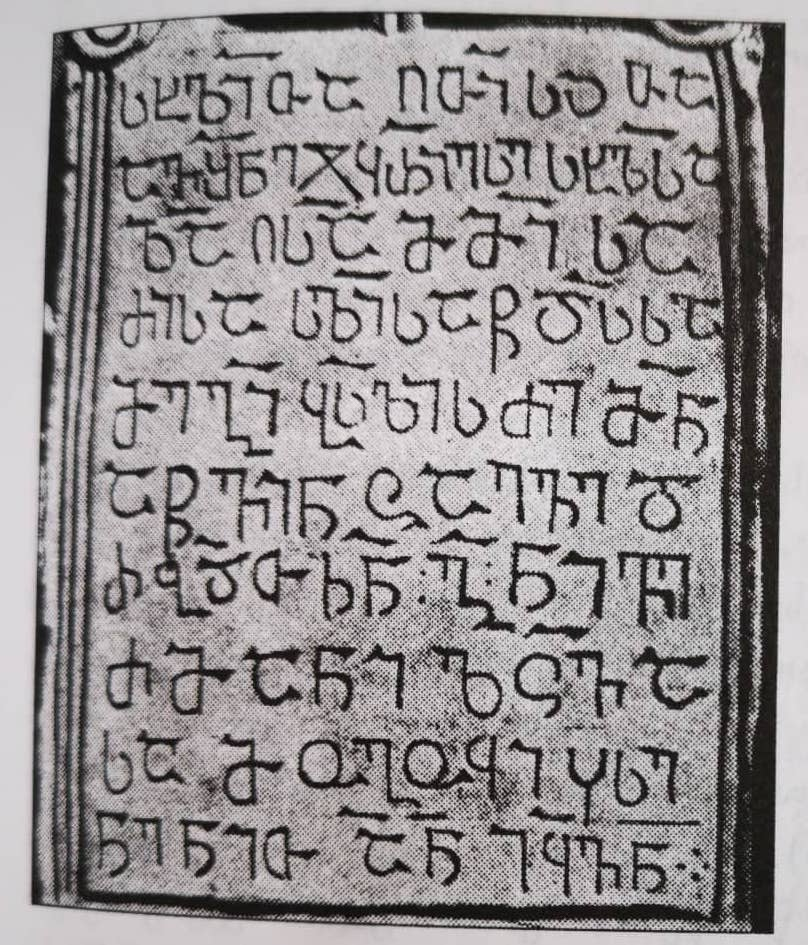

ანუხვა, გიორგი ბასილის ძის წარწერა ქვაჯვრის სვეტზე
შინაარსი / Summary
სავედრებელი
კრიტიკული გამოცემა Interpretive Edition
ქ(რისტ)ე შ(ე)წყ(ა)ლე მ(ი)ქ(აე)ლ ა(მე)ნ
დიპლომატიური გამოცემა Diplomatic Edition
ႵႤ ႸႼႷႪႤ ႫႵႪ ႠႬ

ანუხვა, გიორგი ბასილის ძის წარწერა
{'ka': 'ქრისტევ, შეიწყალე მიქაელი, ამინ.'}
{'default': 'ამჟამად სვეტის ქვედა კიდე მოტეხილია; უმნიშვნელოდ არის დაზიანებული, აგრეთვე, სვეტის ზოგიერთი სხვა ნაწილიც; გეომეტრიული ჩუქურთმები სტელას ოთხ რეგისტრად ჰყოფენ, გიორგი ბასილის ძის სამშენებლო წარწერა ამოკვეთილია ქვემოდან პირველ-მეორე რეგისტრში. გამოცემები:1) А. К. Кация, Памятники архитектуры, 1967 , таб. IX, рис. 2) ქწკ, II, gv. 30-31, N5. 3) თ. მიბჩუანი, აფხაზეთის მატ. კულტურის ძეგლები, 50-51 (ქწკ, II, N5-ის მიხ.). 4) Л. Ааладзе, Епиграфические памятники Абхазии, с. 364, N1.'}
<div type="edition" xml:lang="ka" ana="mtavruli" xml:space="preserve">
<ab>
<lb n="1"/><w lemma="ქრისტე"><expan><abbr>ქ</abbr><ex>რისტ</ex><abbr>ე</abbr></expan></w>
<w lemma="განსუენება"><expan><abbr>გა</abbr><ex>ნ</ex><abbr>ო</abbr><ex>ჳ</ex><abbr>ს</abbr><ex>უ</ex><abbr>ენე</abbr></expan></w>
<w lemma="სულ">სოჳ<lb n="2" break="no"/>ლსა</w>
<name nymRef="ვაჩა">ვაჩაჲს<lb n="3" break="no"/>ასა</name>
<name nymRef="გურა"><expan><abbr>გო</abbr><ex>ჳ</ex><abbr>რაჲ<lb n="4" break="no"/>სასა</abbr></expan></name>
<name nymRef="მირა"><expan><abbr>მ</abbr><ex>ი</ex><abbr>რა</abbr><ex>ჲ</ex><abbr>ს</abbr><ex>ა</ex><abbr>ს</abbr><ex>ა</ex></expan></name>
</ab>
</div>